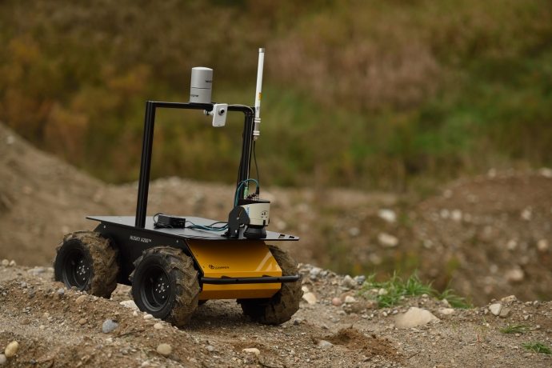

Husky UGV Tutorials¶
Husky is a rugged, outdoor-ready unmanned ground vehicle (UGV), suitable for research and rapid prototyping applications. Husky fully supports ROS—all of the packages are available in the Husky github org.
For more information or to receive a quote, please visit us online.
Warning
These tutorials assume that you are comfortable with ROS and the catkin build system. Please familiarize yourself using the ROS and catkin tutorials.
Installation¶
Demo Applications: Manipulation¶
Package Components¶